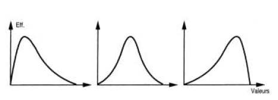
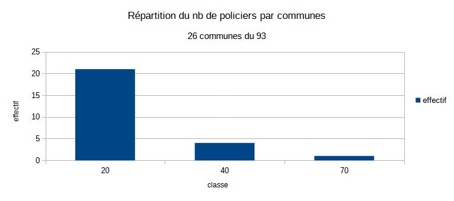
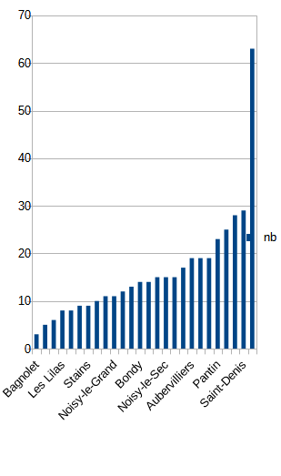
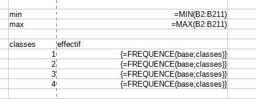
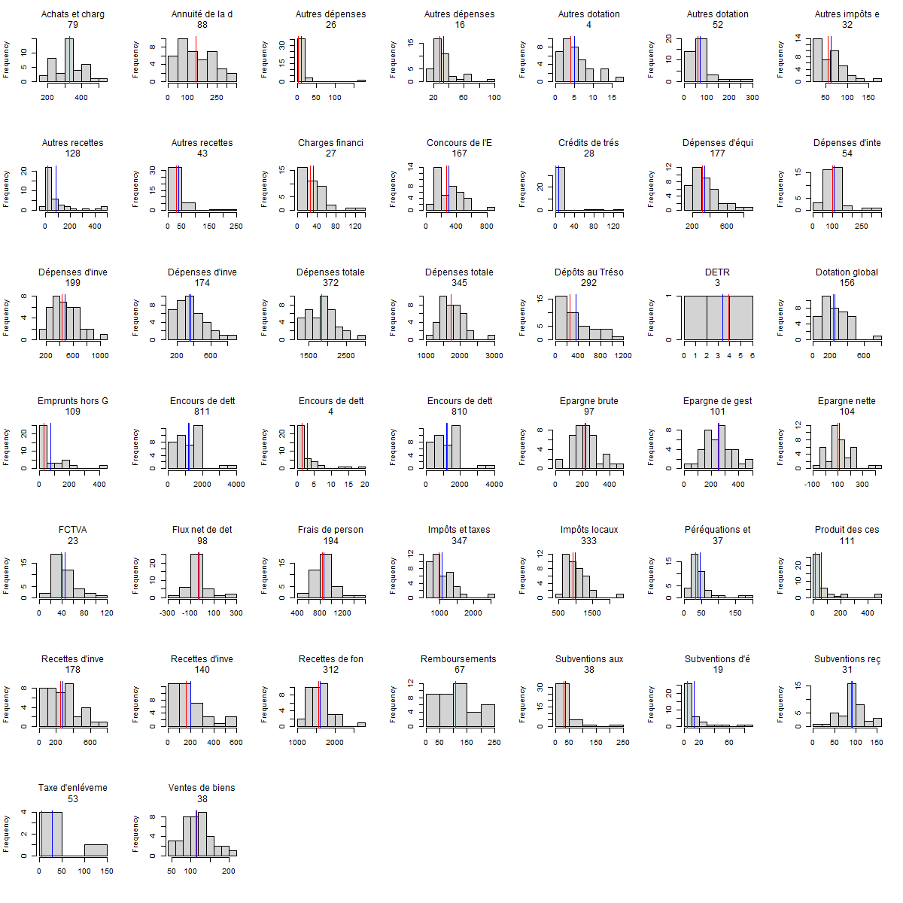
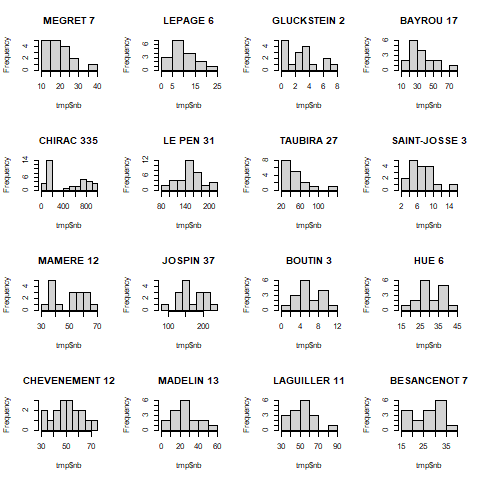
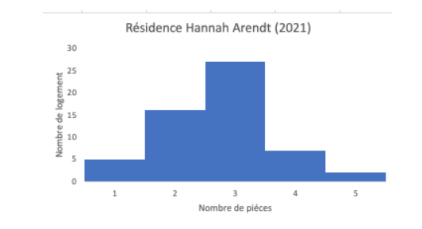
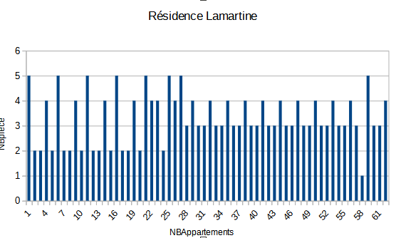
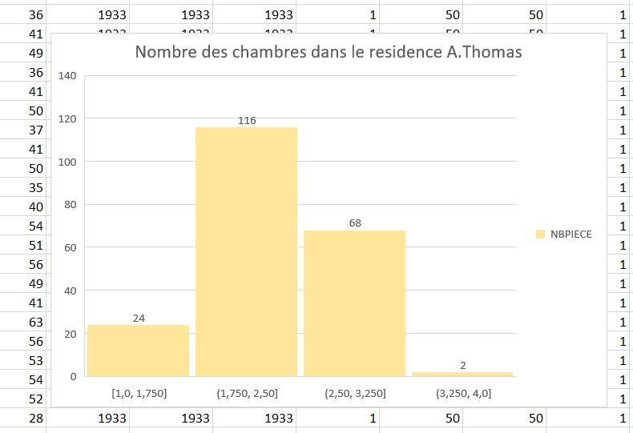
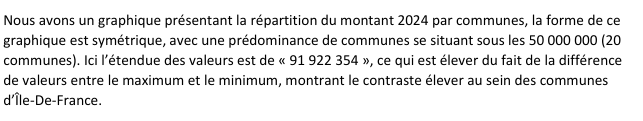

Statistique univariée
Télécharger et ouvrir le fichier de données du cours.
1 Termes
1.1 Trouver des termes pour les objets en statistiques
exemples
variable,
observation,
valeur
A vous !
On retiendra pour le moment uniquement les termes : individu / population / variable et modalité
1.2 distinguer tableau complet, tig, tableau condensé
Individu -> Modalité
Modalité -> Individus
2 L’essentiel : la forme d’une distribution
2.1 Abscisses et ordonnées

2.2 Tiges et feuilles
discrétisation la plus rudimentaire
2.3 Et sous un tableur
2.3.0.1 Resultat attendu

Et non pas :

2.3.1 Préparation de l’exercice
2.3.1.1 Pour obtenir un TIG avec une seule variable, quelle variable choisir et pour quels individus ?
Dans l’exemple proposé du cous, on choisit la colonne de la dénomination des bureaux (1 à 32) et les abstentions à Bondy
Cet exercice permet d’utiliser dans le tableur :
utilisation de la barre d’adresse
formule frequence, formule matricielle (CTRL + MAJ + ENTREE)
formules du tableau

2.3.2 Quel commentaire ?
- étendue
- forme de la distribution
2.4 A explorer
graphique en barres, lignes (lissage)
Observer la disposition des bornes : elles sont utilisées comme des étiquettes et non pas comme une série de valeurs.
2.5 Correction graphiques étudiants
En fonction du rendu
3 Pour raffiner : les indicateurs
Nous avons déjà vu l’amplitude à travers minimum et maximum. Il y en a d’autres. Ils servent à résumer la série statistique
Pour l’exemple, on prend la commune choisie et tous les résultats des candidats dans chaque bureau de vote
bondy2002 <- read.csv("data/bondy2002.csv", fileEncoding = "UTF-8")
str(bondy2002)## 'data.frame': 306 obs. of 8 variables:
## $ X : int 974096 974097 974098 974099 974100 974101 974102 974103 974104 974105 ...
## $ ville : chr "Bondy" "Bondy" "Bondy" "Bondy" ...
## $ bv : int 1 1 1 1 1 1 1 1 1 1 ...
## $ inscrits: int 1299 1299 1299 1299 1299 1299 1299 1299 1299 1299 ...
## $ votants : int 868 868 868 868 868 868 868 868 868 868 ...
## $ exprimes: int 850 850 850 850 850 850 850 850 850 850 ...
## $ nom : chr "MEGRET" "LEPAGE" "GLUCKSTEIN" "BAYROU" ...
## $ nb : int 18 18 1 60 143 148 39 8 56 147 ...table(bondy2002$bv)##
## 1 2 3 4 5 6 7 8 9 10 11 12 13 14 15 16 17
## 18 18 18 18 18 18 18 18 18 18 18 18 18 18 18 18 18Le tableau de 2002 se présente différemment de celui de 2022.
3.1 Calcul : valeurs centrales et dispersion
3.1.1 Valeurs centrales
Il s’agit de caractériser une distribution par son centre.
3.1.1.1 Moyenne et médiane
3.1.1.1.1 Calcul
Le calcul de la moyenne est connu. Celui de la médiane beaucoup moins.
3.1.1.1.1.1 Sur le tableau complet
Créer une colonne rang. Et relever le rang médian

3.1.1.2 savoir faire tableur
valeur fixe et relative (utilisation du $ et F4)
au niveau graphique, rajout d’un axe par le menu insertion après double clic sur le graphique (onglet positionnement, menu déroulant valeur)
3.1.1.2.1 Que retenir ?
3.1.1.2.1.1 Expliquer ces phrases issues du Chadule
- La médiane est dans une distribution la valeur la plus proche de toutes les autres
Il s’agit d’une propriété mathématique de la médiane.
- les valeurs extrêmes décentrent la moyenne
3.1.1.2.2 Rapport entre médiane et moyenne
Que peut-on dire de la forme de la distribution
si la moyenne est égale à la médiane ?
si moyenne > médiane
si médiane > moyenne
candidat <- unique(bondy2002$nom)
png("img/medmoy.png")
par(mfrow=c(4,4))
for (i in 1:length(candidat)){
tmp <- bondy2002 [bondy2002$nom == candidat [i],]
moy <- mean(tmp$nb)
med <- median(tmp$nb)
hist(tmp$nb, main = candidat [i])
abline(v = moy, col = 'blue')
abline(v = med, col = 'red')
}
dev.off()## png
## 2
Chercher à caractériser les voix pour les différents candidats en fonction de la médiane / moyenne
3.1.2 Dispersion : Ecart-type et variance
La distribution est-elle hétérogène ?
png("img/ecartType.png")
par(mfrow=c(4,4))
for (i in 1:length(candidat)){
tmp <- bondy2002 [bondy2002$nom == candidat [i],]
sigma <- sd(tmp$nb)
med <- median(tmp$nb)
hist(tmp$nb, main = paste0(candidat [i], " ", round(sigma,0)))
}
dev.off()## png
## 2
3.1.2.1 2 définitions :
écart moyen des valeurs à leur moyenne arithmétique
moyenne du carré des écarts
3.1.2.2 Une question fondamentale : pourquoi utiliser les carrés ?
et notamment, pour l’oeil du géographe :
Une façon de penser à cela est que l’écart-type est similaire à une “distance par rapport à la moyenne”.
Comparez cela à des distances dans un espace euclidien - ceci vous donne la vraie distance, où ce que vous avez suggéré (qui, en fait, est la déviation absolue ) ressemble plus à un calcul de distance manhattan .
3.1.3 Utilisation du tableur
Toujours sans passer par les formules, mais avec un tableau pas à pas, créer les indicateurs.
liste des colonnes :
écart à la moyenne
carré des écarts
et à part sur une seule case : moyenne du carré des écarts (variance), l’écart type est la racine carrée.
3.1.4 Corrections quelques remarques (2022)
L’objectif de l’exercice était d’obtenir un commentaire clair avec quelques repères statistiques.
3.1.4.1 Les bons graphiques
3.1.4.1.1 Un graphique du TIG

3.1.4.1.2 Une diagramme de répartition

3.1.4.1.3 Quelles erreurs dans les graphiques suivants ?
  
3.1.5 Les commentaires
Beaucoup d’étudiants ne voient pas la nécessité d’un commentaire…
3.1.5.1 Commentaire clair
La moyenne et la médiane sont très proches. En effet, en moyenne, les logements de la résidence possèdent 3 pièces et 50 % des logements possèdent moins de 3 pièces. On peut en déduire que la série est assez homogène.De plus, l’écart type est faible, ce qui signifie que les valeurs sont peu dispersées autour de la moyenne et donc il vient confirmer que la série est homogène.
3.1.5.2 trop technique

3.1.5.3 Des commentaires intéressants
3.1.5.3.1 Un peu confus.

3.1.5.3.2 Une réflexion sur le terme hétérogène